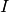
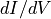
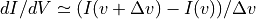
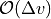
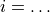
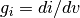
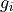
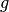
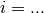

NMODL CONDUCTANCE
This notebook described the CONDUCTANCE keyword in NEURON, how it is implemented in NMODL, and shows some examples of the output generated by NMODL in different situations.
For a more general tutorial on using the NMODL python interface, please see the tutorial notebook.
Introduction
Motivation: - during a NEURON simulation, a number of currents  may be generated - at each time step, for each current the corresponding conductance  needs to be calculated - by default in NEURON this is approximated by a forwards difference: , with - this introduces an  numerical error - it also requires two current calculations, which may be computationally inefficient
Solution: - the CONDUCTANCE keyword was added to the NMODL language - this allows the user to manually specify the analytic expression for the conductance in the MOD file - during the simulation, instead of the numerical differentiation, the user supplied expression is used - this solves the problem, but requires additional effort from the user - it also opens up room for user error: an incorrect expression will still run but the results will not be correct
SymPy improvement: - the currents in the mod file are differentiated analytically using SymPy - the corresponding CONDUCTANCE statements are generated automatically - no additional input required from the user - avoids the possibility of user error
Implementation
The SympyConductanceVisitor is defined in src/visitors/sympy_conductance_visitor.hpp, and it makes use of the python function differentiate2c to perform the analytic differentation using the SymPy symbolic math Python library.
For each ion write statement  in the BREAKPOINT block
Differentiate to find the conductance 
If this  coincides with an existing variable, e.g. , add to BREAKPOINT the statement:
CONDUCTANCE g USEION ion_name
If not, also need to declare and asign a variable for the calculated conductance:
LOCAL g_i_0
CONDUCTANCE g_i_0 USEION ion_name
g_i_0 = …
But if there is an existing CONDUCTANCE statement, then do not modify it
It may be the case that a variable in the write statement itself depends on
 , so to take this into account:
, so to take this into account:an inlining visitor is first ran, after which all variable assignments occur within the BREAKPOINT block
each preceeding expression is analysed in reverse order for
dependenceif it depends on
, the rhs of the expression is substituted for the lhs in all following statementsthe end result is a (complicated) expression  where all v dependence is explicit
this is then differentiated w.r.t
to give the conductanceit then checks if this expression is equivalent to an existing variable
for this step it is necessary to also substitute all non-
-dependent expressions on both sides & simplify
Implementation Tests
The unit tests may be helpful to understand what these functions are doing
SympyConductanceVisitortests are located in test/visitor/visitor.cppdifferentiate2ctests are located in test/ode/test_ode.py
Examples
Here are some examples of generated CONDUCTANCE statements for a variety of sample mod files.
[1]:
%%capture
! pip install nmodl
[2]:
import nmodl.dsl as nmodl
def run_conductance_visitor_and_return_breakpoint(mod_string):
# parse NMDOL file (supplied as a string) into AST
driver = nmodl.NmodlDriver()
AST = driver.parse_string(mod_string)
# run SymtabVisitor to generate Symbol Table
nmodl.symtab.SymtabVisitor().visit_program(AST)
# constant folding, inlining & local variable renaming passes
nmodl.visitor.ConstantFolderVisitor().visit_program(AST)
nmodl.visitor.InlineVisitor().visit_program(AST)
nmodl.visitor.LocalVarRenameVisitor().visit_program(AST)
# run CONDUCTANCE visitor
nmodl.visitor.SympyConductanceVisitor().visit_program(AST)
# return new BREAKPOINT block
return nmodl.to_nmodl(
nmodl.visitor.AstLookupVisitor().lookup(
AST, nmodl.ast.AstNodeType.BREAKPOINT_BLOCK
)[0]
)
Ex. 1
simple USEION statement, conductance equal to existing variable
add CONDUCTANCE statement using existing variable
[3]:
ex1 = """
NEURON {
USEION na READ ena WRITE ina
RANGE gna
}
BREAKPOINT {
ina = gna*(v - ena)
}
"""
print(run_conductance_visitor_and_return_breakpoint(ex1))
BREAKPOINT {
CONDUCTANCE gna USEION na
ina = gna*(v-ena)
}
Ex. 2
simple USEION statement, conductance not equal to existing variable
declare new local variable
assign conductance to it
add CONDUCTANCE statement
[4]:
ex2 = """
NEURON {
USEION na READ ena WRITE ina
RANGE gna
}
BREAKPOINT {
ina = 0.1*gna*(v - ena)
}
"""
print(run_conductance_visitor_and_return_breakpoint(ex2))
BREAKPOINT {
LOCAL g_na_0
CONDUCTANCE g_na_0 USEION na
g_na_0 = 0.10000000000000001*gna
ina = 0.1*gna*(v-ena)
}
Ex. 3
simple NONSPECIFIC_CURRENT statement, conductance equal to existing variable
add CONDUCTANCE statement using existing variable
[5]:
ex3 = """
NEURON {
NONSPECIFIC_CURRENT i
RANGE g
}
BREAKPOINT {
i = g*v
}
"""
print(run_conductance_visitor_and_return_breakpoint(ex3))
BREAKPOINT {
CONDUCTANCE g
i = g*v
}
Ex. 4
non-linear NONSPECIFIC_CURRENT statement, conductance not equal to existing variable
declare new local variable
assign conductance to it
add CONDUCTANCE statement
[6]:
ex4 = """
NEURON {
NONSPECIFIC_CURRENT i
RANGE g
}
BREAKPOINT {
i = g*v + v*v
}
"""
print(run_conductance_visitor_and_return_breakpoint(ex4))
BREAKPOINT {
LOCAL g__0
CONDUCTANCE g__0
g__0 = g+2.0*v
i = g*v+v*v
}
Ex. 5
several current statements, conductance equal to existing variables
add CONDUCTANCE statements
[7]:
ex5 = """
NEURON {
USEION na READ ena WRITE ina
USEION k READ ek WRITE ik
NONSPECIFIC_CURRENT il
RANGE gnabar, gkbar, gl, el, gna, gk
}
STATE {
m n h
}
BREAKPOINT {
gna = gnabar*m*m*m*h
ina = gna*(v - ena)
gk = gkbar*n*n*n*n
ik = gk*(v - ek)
il = gl*(v - el)
}
"""
print(run_conductance_visitor_and_return_breakpoint(ex5))
BREAKPOINT {
CONDUCTANCE gl
CONDUCTANCE gk USEION k
CONDUCTANCE gna USEION na
gna = gnabar*m*m*m*h
ina = gna*(v-ena)
gk = gkbar*n*n*n*n
ik = gk*(v-ek)
il = gl*(v-el)
}
Ex. 6
current contains variables that depend on
, conductance equal to existing variable x3substitute all variables with
-dependence, differentiate to find conductancecompare result to each existing variable (after substituting all preceeding declarations on both sides)
identify that expression for conductance is equivalent to
x3add CONDUCTANCE statement using this existing variable
[8]:
ex6 = """
NEURON {
USEION na READ ena WRITE ina
RANGE gna, x1, x2, x3
}
BREAKPOINT {
x1 = 0.2+3*v
x2 = v*v
x3 = 3*v*v+5*v-1.3
gna = x1 + x2
ina = gna*(v-0.5)
}
"""
print(run_conductance_visitor_and_return_breakpoint(ex6))
BREAKPOINT {
CONDUCTANCE x3 USEION na
x1 = 0.2+3*v
x2 = v*v
x3 = 3*v*v+5*v-1.3
gna = x1+x2
ina = gna*(v-0.5)
}
Ex. 7
current contains variables that depend on
, conductance not equal to existing variablesubstitute all variables with
-dependence, differentiate to find conductancecompare result to each existing variable, no equivalent expression found
declare new local variable, assign conductance to it
add CONDUCTANCE statement using this new variable
[9]:
ex7 = """
NEURON {
USEION na READ ena WRITE ina
RANGE gna, x1, x2
}
BREAKPOINT {
x1 = 0.2+3*v
x2 = v*v
gna = x1 + x2
ina = gna*(v-0.5)
}
"""
print(run_conductance_visitor_and_return_breakpoint(ex7))
BREAKPOINT {
LOCAL g_na_0
CONDUCTANCE g_na_0 USEION na
g_na_0 = 3.0*pow(v, 2)+5.0*v-1.3
x1 = 0.2+3*v
x2 = v*v
gna = x1+x2
ina = gna*(v-0.5)
}
[ ]: